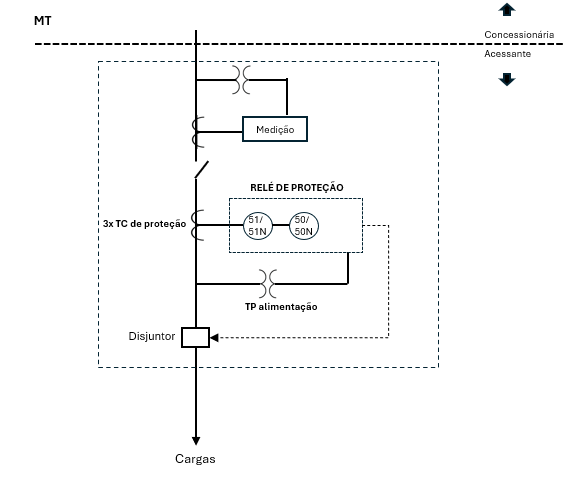
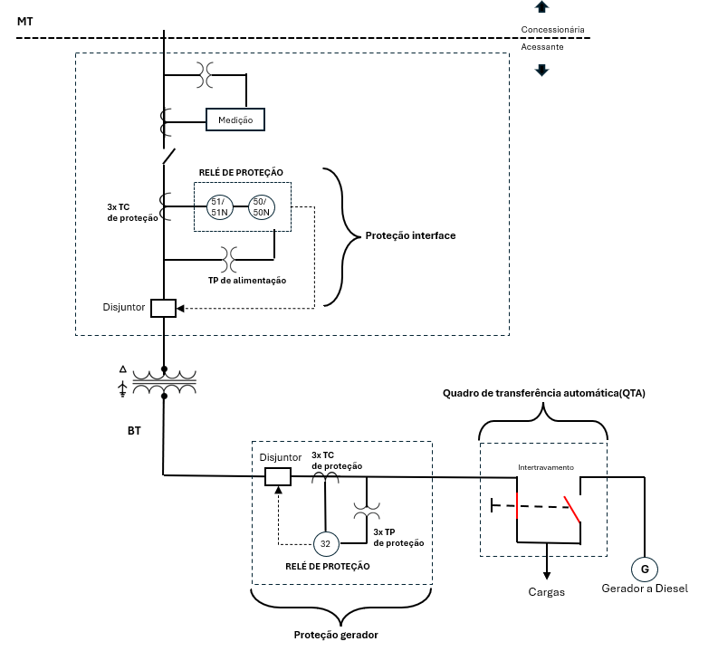
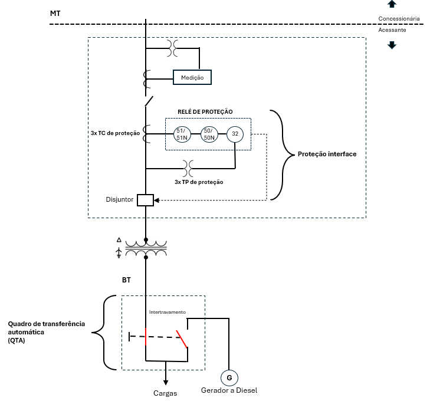
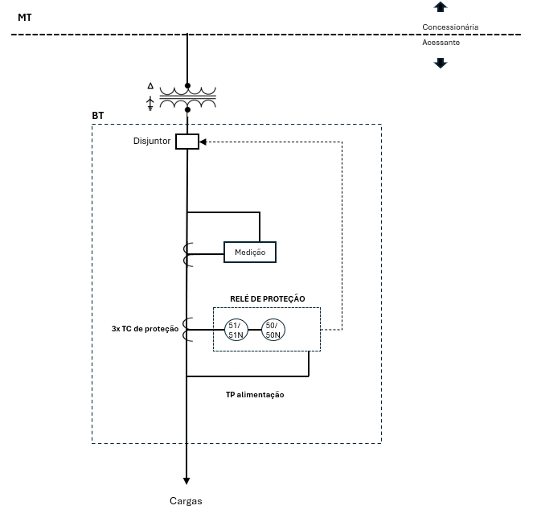
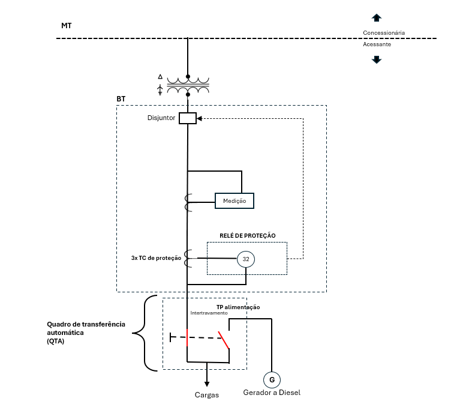

COORDINATION WEB
DIAGRAMAS
PARÂMETROS
TRAFOS
TP/TC
AJUSTES
TABELA
ESTUDOS
AJUSTES GD
TABELA GD
ESTUDOS GD
ANÁLISE
SAIR
Selecione o tipo de diagrama:
1-CONEXÃO COM FUNÇÃO 50/51, 50/51N SEM GERADOR EM PARALELISMO
2-CONEXÃO COM FUNÇÃO 50/51, 50/51N E 32 EXTERNA PARA PROTEÇÃO DO GERADOR
3-CONEXÃO COM FUNÇÃO 50/51, 50/51N E 32 INTERNA AO PAINEL DE INTERFACE PARA PROTEÇÃO DE GERADOR A DIESEL
4-CONEXÃO COM FUNÇÃO 50/51, 50/51N SEM GERADOR EM PARALELISMO BAIXA TENSÃO
5-CONEXÃO COM FUNÇÃO 32 COM GERADOR EM PARALELISMO BAIXA TENSÃO
reserva
reserva
reserva





Salvar